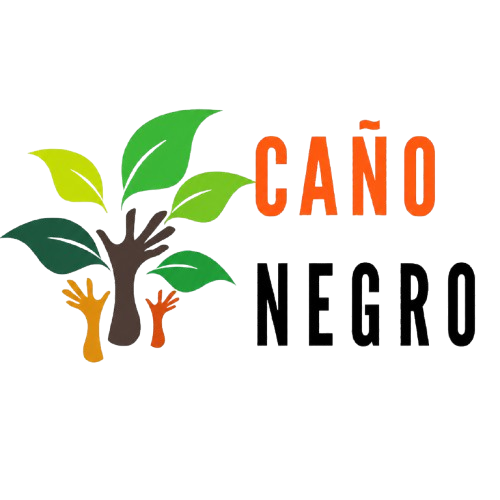
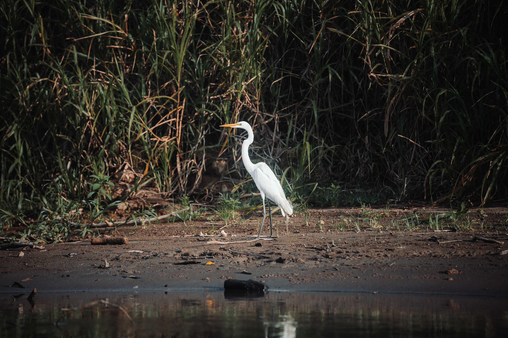
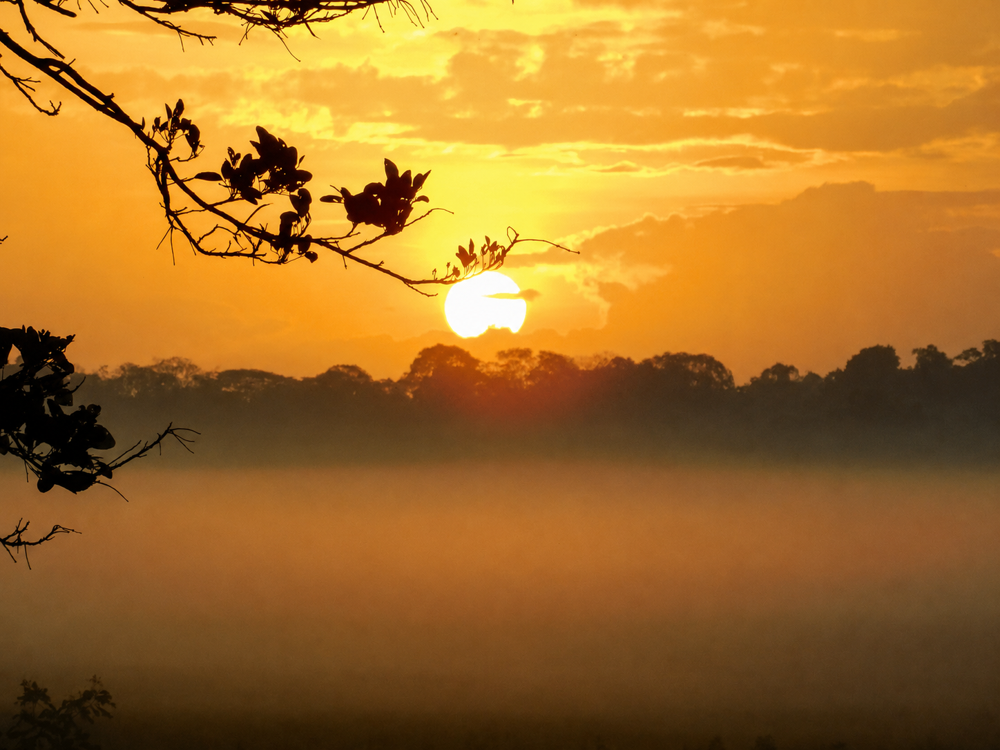
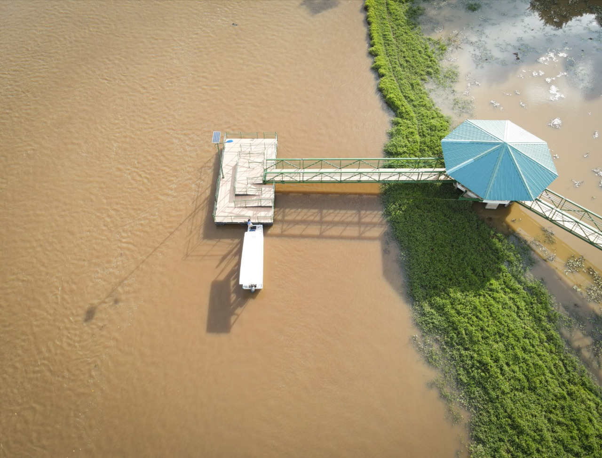
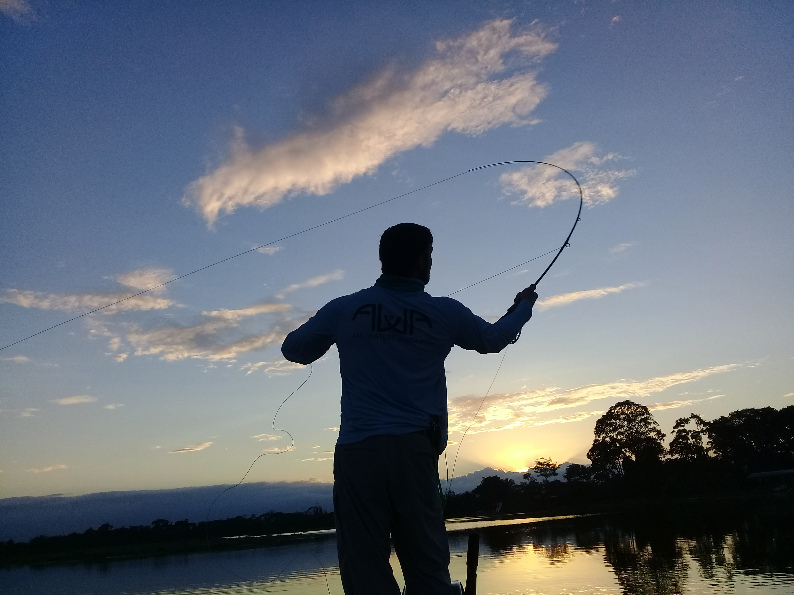
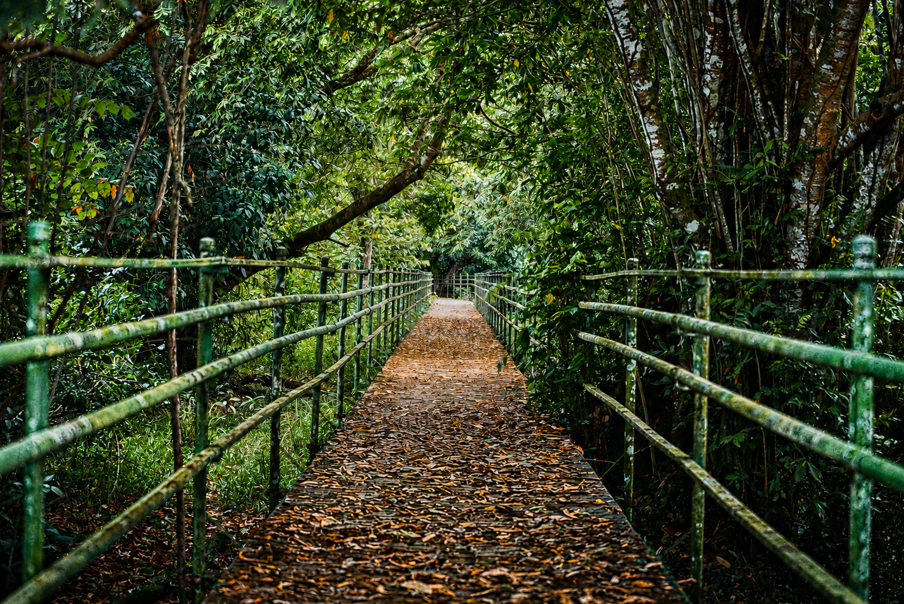
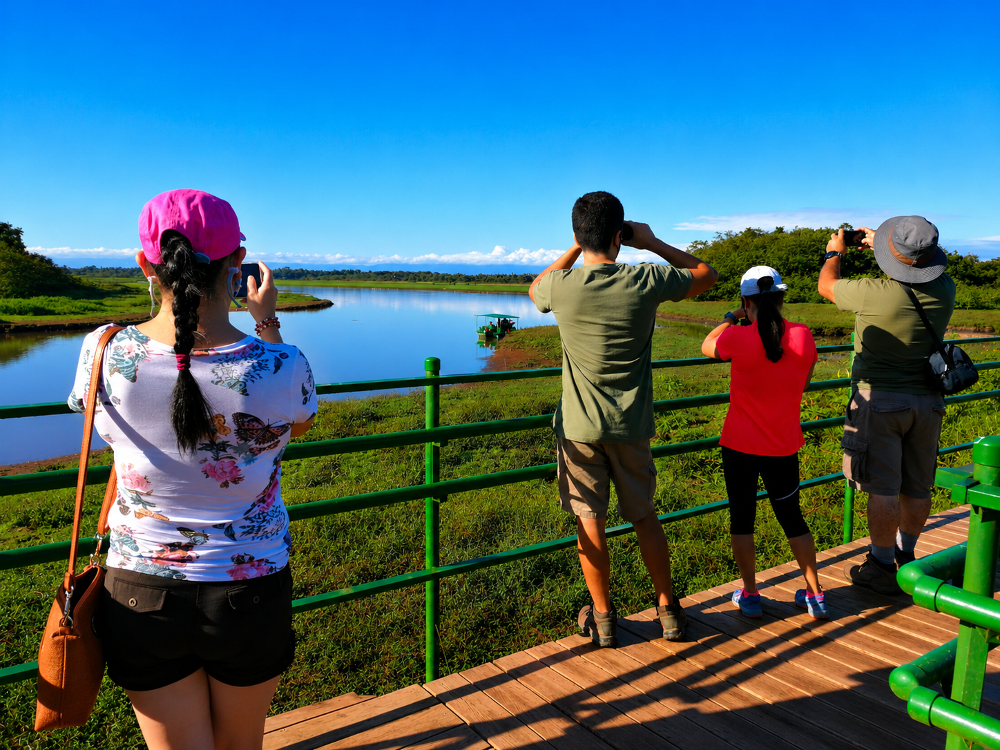
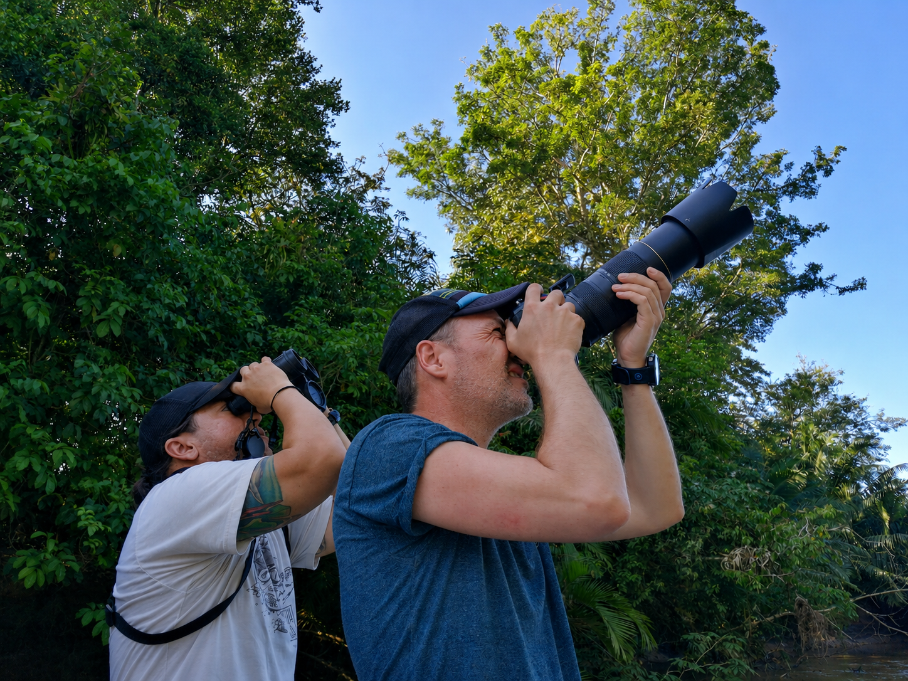
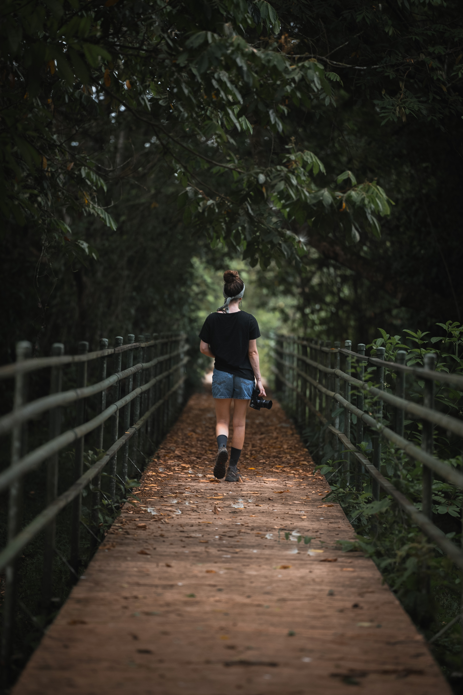

Conexión con el humedal
Plataformas sobre el agua que te llevan al corazón del humedal, donde podés sentir la corriente, contemplar la fauna y vivir de cerca la magia de Caño Negro.
Caño Negro, Los Chiles, Alajuela
Los muelles de Caño Negro no sirven para cruzar el agua de un lado a otro. Son plataformas que te adentran en el humedal y te colocan directamente sobre él, creando una experiencia que no se parece a ninguna otra.
Desde sus tablones podés sentir el movimiento del río debajo, la corriente que pasa, y las pequeñas olas que levantan las lanchas al pasar. No es solo un lugar de paso; es un lugar donde detenerse.
Son un atractivo tanto para los visitantes que llegan al refugio como para las personas de la comunidad, que los usan como punto de encuentro con la naturaleza que los rodea cada día.
Podés pescar con caña mientras el río corre bajo tus pies, fotografiar las garzas que descansan en las orillas, o simplemente sentarte a ver cómo el sol se hunde entre los árboles al atardecer.
Desde ahí también se observan los canales, las lagunas y la fauna del refugio: caimanes asoleándose, tortugas, monos, y cientos de especies de aves que hacen de Caño Negro uno de los destinos de observación más ricos de Costa Rica.




Para las personas de Caño Negro, los muelles son espacios de encuentro, de pesca y de contemplación que forman parte de la vida cotidiana junto al río. Son suyos desde siempre.
Para los visitantes son una de las experiencias más auténticas del refugio: estar sobre el agua, rodeado de naturaleza, sintiendo el viento y escuchando el humedal, es algo que no se olvida fácilmente.




Se ubica en Los Chiles, Alajuela, Costa Rica, cerca de la frontera con Nicaragua.
Puedes acceder por la Ruta 138 desde Upala o Los Chiles. Usa el botón de ubicación para ver la ruta.
Más de 300 especies de aves, además de reptiles, mamíferos y una gran diversidad de flora.
Durante la estación seca para senderismo, o época lluviosa para ver aves migratorias.
Ropa cómoda, repelente, agua, cámara y protección solar.
Cambiando idioma...